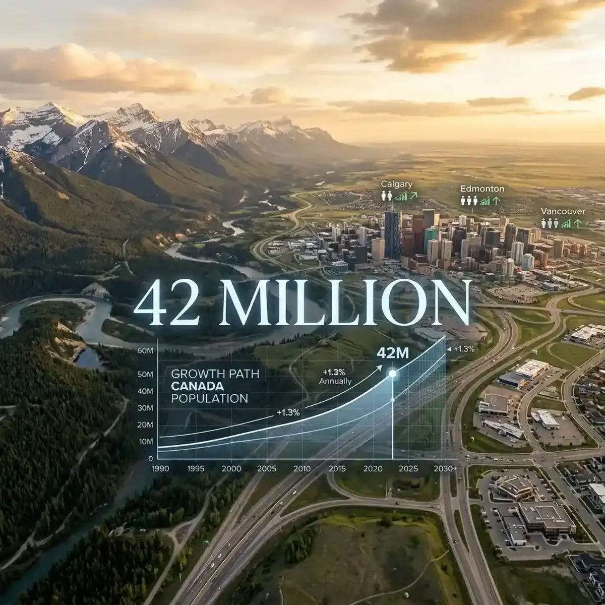

Canada's Population Shift: Monitoring Immigration Policy and Demographic Trends

Canada’s population surpassed 42 million in March 2026, driven by a complex interplay of high immigration targets and a shift in national demographic strategy.
For policymakers, urban planners, and the general public, the "42-million milestone" is more than just a number—it represents a fundamental shift in Canada's societal fabric. The new "Sustainable Growth" immigration targets, announced in late 2025 and implemented throughout 2026, aim to balance the country's need for labor with the current infrastructure and housing constraints. To truly understand the impact of these policies—from the changing face of major cities to the rise of rural growth centers—a multi-stream social listening approach is essential. YoutubeMulti offers the ideal dashboard to track these demographic trends as they develop across the country.
The New "Sustainable Growth" Policy: A Shift in Strategy
The core of the 2026 demographic narrative is the government's pivot toward "Sustainablity." After several years of aggressive immigration targets aimed at addressing labor shortages, the 2026 policy focuses on the better alignment of new arrivals with specific regional needs. This includes a higher emphasis on recruiting skilled labor for the construction and healthcare sectors, while also encouraging a "geographic redistribution" away from overburdened hubs like Toronto and Vancouver. Understanding the specifics of these shifts involves monitoring the live briefings from the Ministry of Immigration, Refugees and Citizenship Canada (IRCC) alongside the real-time reactions from industry experts.
Using YoutubeMulti, you can dedicate a primary tile to the official IRCC YouTube channel for the latest policy breakdowns and public announcements. In the side tiles, you can monitor live reaction feeds from urban-planning experts, economic researchers (like those at the Fraser Institute or the Conference Board of Canada), and independent "migration-focused" analysts. This allows you to cross-reference the official government narrative with the "expert critiques" simultaneously. This level of total situational awareness helps you see the early signs of a successful policy shift vs. the potential for unintended social consequences. Total transparency is the key to understanding the future of Canada's social contract.
Demographic Deep-Dive: Aging Populations and the Need for Youthful Labor
To understand the "why" behind Canada's continued immigration focus, you must look at the aging population. By March 2026, the ratio of retirees to working-age adults has reached a record high, placing significant pressure on the national healthcare system and the Canada Pension Plan (CPP). The need for a young, youthful workforce to support this aging population is the primary driver of Canada's demographic strategy. This deep-dive into the "numbers" is what drives the policy decisions that affect every Canadian’s life.
A multi-stream surveillance setup allowing you to monitor these individual demographic markers in real-time is an essential research tool. Use one tile for a live dashboard of current birth/death rate data, another for the latest labor-force participation figures, and a third for a side-by-side comparison with the demographic trends of other G7 nations. This "trans-national triangulation" provides a level of context that single-source news simply cannot match. For instance, seeing how Canada's population growth compares to the stagnation of Japan or Italy helps you understand why Canada's approach is both unique and critical. This is institutional-grade demographic monitoring, now available to the individual enthusiast or researcher.
Geographic Trends: The Rise of the Prairies and the Atlantic Coast
One of the most interesting demographic stories of 2026 is the rapid population growth in the Prairies (especially Alberta and Saskatchewan) and parts of the Atlantic Coast (like Halifax). This "internal migration" is driven by a combination of lower housing costs and the successful implementation of the "Sustainable Growth" redistribution policies. These "growth centers" are seeing a surge in infrastructure development, local business activity, and social diversity that is redefining what it means to live in a "non-major" Canadian city.
Monitoring the "real-world" impact of these shifts requires tracking more than just official data. Use YoutubeMulti to aggregate live feeds from local municipal leaders, regional real estate experts, and community-led social media feeds (like Reddit's r/Alberta or r/NovaScotia) to see how the new arrivals are being integrated. Dedicate one tile to a live "smart-city" dashboard tracking local housing starts, another to local news channels from the growth centers, and a third to a live forum or social media feed to see the "authentic" perspective of current residents. This "ground-level" view—informed by the high-level policy announcement—is essential for making informed decisions about where to live, invest, or start a business in 2026.
Social Awareness with YoutubeMulti: The Demographic Surveillance Grid
A major demographic shift is a high-information, high-consequence event. Between the official census reports, the 100-page policy whitepapers, and the thousands of conflicting pundit opinions, there is too much noise for a single screen. YoutubeMulti allows you to build a professional-grade "Social Monitoring Ops Center" for personal or professional use.
How to Build Your "Smart City" Monitoring Dashboard
- Tile 1: Official IRCC Feed: A high-definition stream of live briefings and policy announcements from the federal government.
- Tile 2: Regional Impact Map: A live dashboard showing house price changes and rental vacancies in specific growth hubs.
- Tile 3: Infrastructure Tracking: Monitor live news from provincial ministries regarding new hospitals, schools, and transit projects.
- Tile 4: Economic Impact: A live ticker of sectoral labor demand (healthcare, construction, tech) vs. current immigration intakes.
- Tile 5: Community Discourse: Monitor social media feeds from diverse "newcomer" and "current-resident" groups to see the real-time social sentiment.
Looking Ahead: Canada's 2030 Population Vision and Infrastructure Challenges
As we look toward the end of the decade, the focus will now shift toward the "infrastructure gap." Can Canada's transit, healthcare, and housing systems keep up with the 42-million milestone? Most analysts believe that the second half of 2026 will be a critical period for "catch-up" infrastructure spending. Any failure to meet these needs could lead to increased social tension and a potential rethinking of the "Sustainable Growth" strategy. Staying informed throughout the latter half of 2026 will be a matter of constant, multi-screen awareness.
To stay ahead of the "2030 Vision" narrative, building a dedicated "Future-Watch Grid" is the best approach. Tracking the weekly infrastructure project announcements alongside the long-term demographic projections from Statistics Canada allows you to spot the early signs of a successful (or struggling) policy implementation. The era of the "active social monitor" has arrived, and it's powered by multi-dimensional intelligence. Whether you are a business owner or an everyday citizen, having total situational awareness is your greatest asset in 2026.
Conclusion: The Necessity of Multi-Stream Demographic Monitoring
The March 2026 "42-million milestone" is more than just a single demographic data point; it’s a narrative about the future of Canada's society. By utilizing advanced tools like YoutubeMulti, you can ensure that you are never caught off-guard by the rapidly changing social landscape. Don't just read the headlines—monitor the charts, analyze the policies, and experience the unfolding of a new nation in real-time. The era of total social awareness is here.